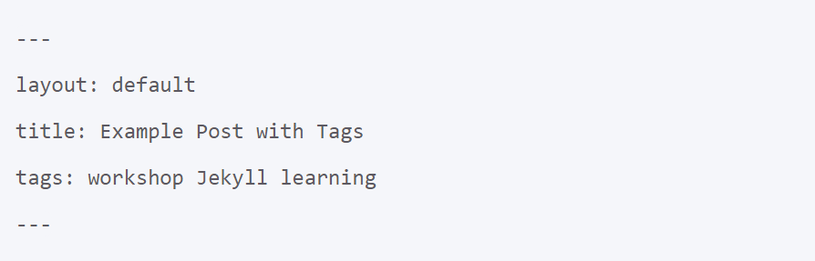
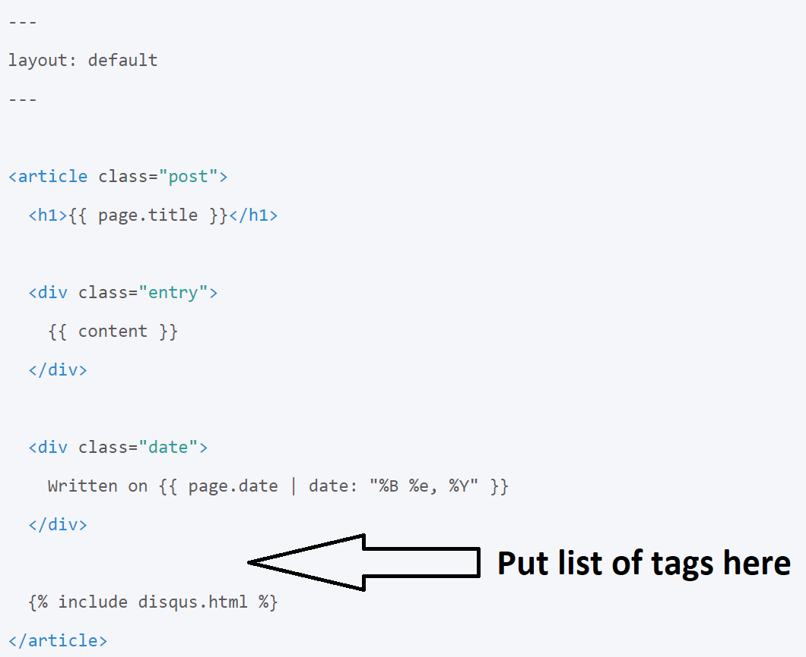

You can also use tags or categories to show related posts. Tags or categories for a post are defined in the post’s front matter. The key "tag" should be used for a single entry and "tags" for multiple entries. Before moving to the next paragraph, add some tags to the Front matter of your post.
In this exercise, you are going to write a piece of code to show all tags of a post and make a hyperlinks for each of them. Open posts layout in your theme directory:
Use:
The webpages are not created by Jekyll, so the hyperlinks would not work right now.
Find the solution: Exercise 2 - Showing Tags of a post